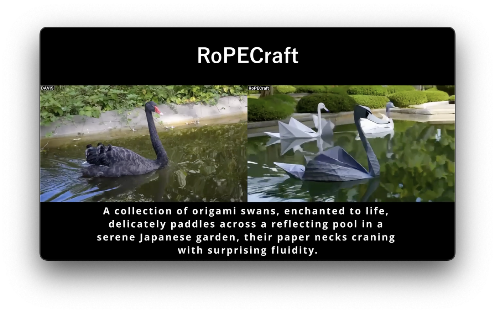
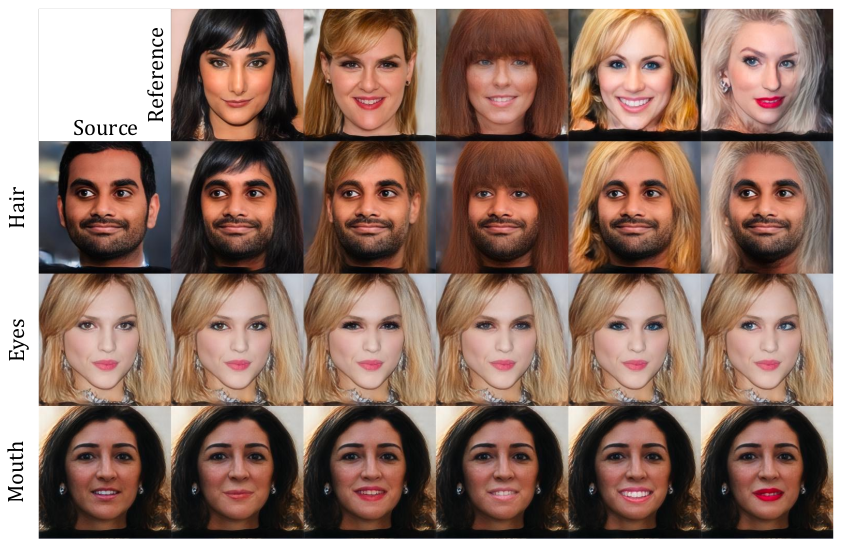
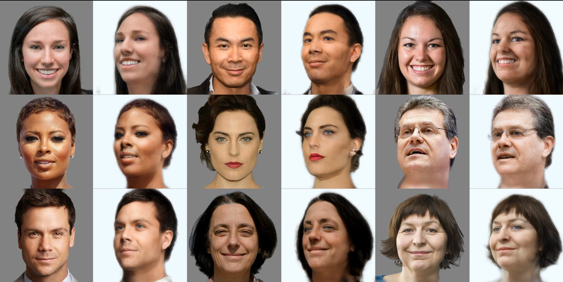
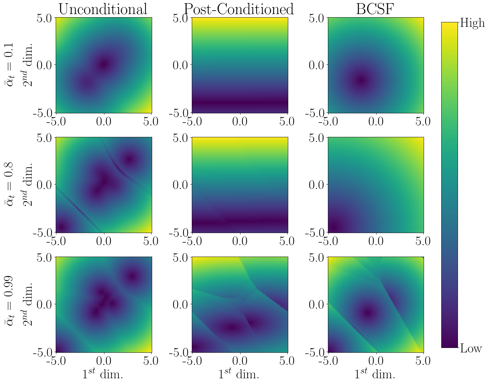
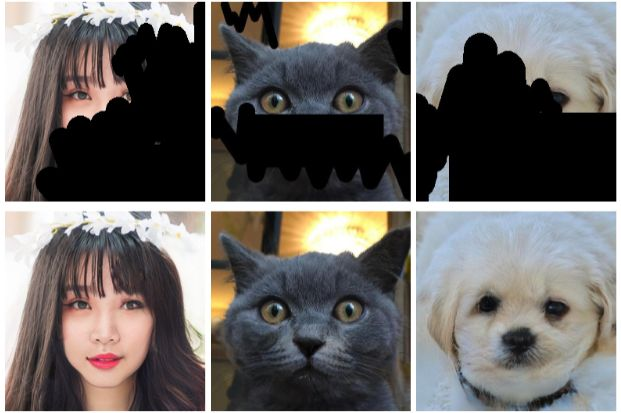
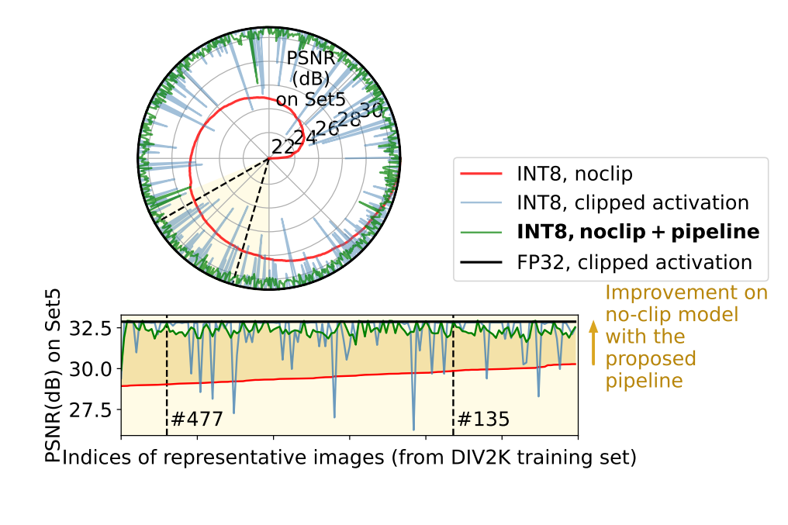
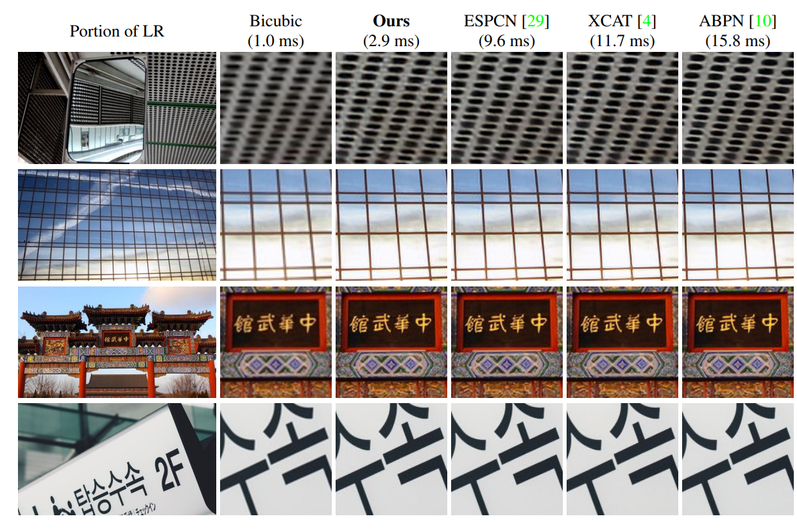
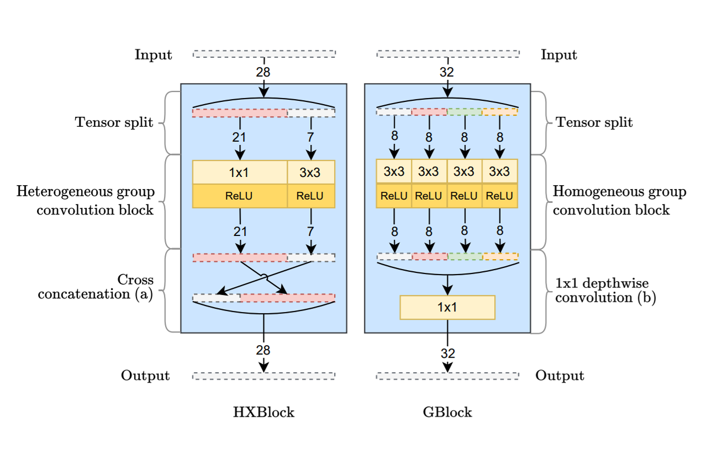
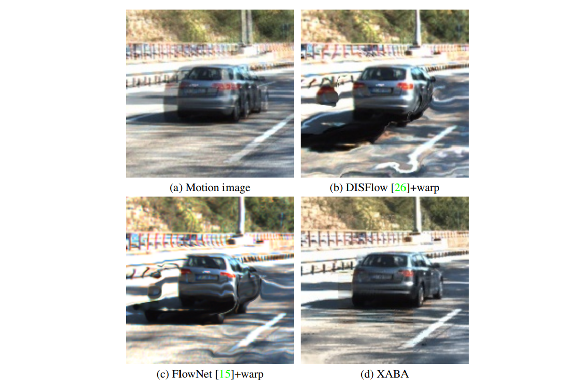

Bahri Batuhan Bilecen
PhD student at ETH Zürich
Hi there 👋 I'm a PhD student at ETH Zürich and Max Planck Institute, under the supervision of Prof. Siyu Tang, Prof. Bernt Schiele, and Dr. Jan Eric Lenssen, with CLS fellowship.
I focus on generative modeling, representation learning, and video-language-action models.
I got my CS MSc at Bilkent University in 2025, and EEE BSc at Middle East Technical University (METU) in 2022. I also worked as a full-time research engineer at Aselsan Inc. in 2021-2025. My MSc thesis focused on 3D reconstruction from single images with generative models, under the supervision of Prof. Aysegul Dundar.
📚 Publications
-

-

-

-

-
arXiv 2024 Bayesian Conditioned Diffusion Models for Inverse Problems
-

-
BMVC 2023 Towards Clip-free Quantized Super-resolution Networks: How to Tame Representative Images
-

-
ECCV 2022 Workshop XCAT: Lightweight Quantized Single Image Super-Resolution using Heterogeneous Group Convolutions and Cross Concatenation
-
CVPR 2022 Workshop Efficient Multi-purpose Cross Attention-Based Image Alignment Block for Edge Devices
🏫 Teaching
- Teaching Assistant, ETH Zürich, 252-0206-00L Visual Computing, 2025
- Grader, Bilkent University, CS 464 Introduction to Machine Learning, 2024
- Grader, Bilkent University, CS 281 Computers and Data Organization, 2023